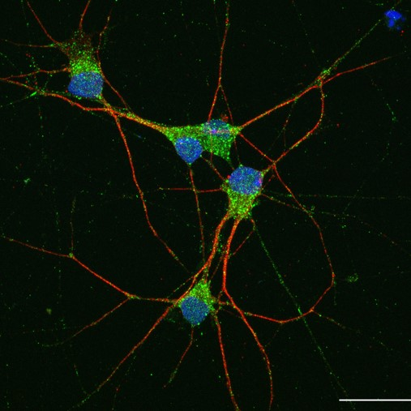

Welcome to White Lab
Opening note
A first introduction to White Lab Neuro, the science behind the lab, and why this website exists.

News
This page brings together news, research updates, publications, lab milestones and accessible writing about the ideas and questions shaping the lab’s direction.


Opening note
A first introduction to White Lab Neuro, the science behind the lab, and why this website exists.
Future post
This page will grow with publications, funding news, talks, public engagement and wider reflections on the science behind the lab.